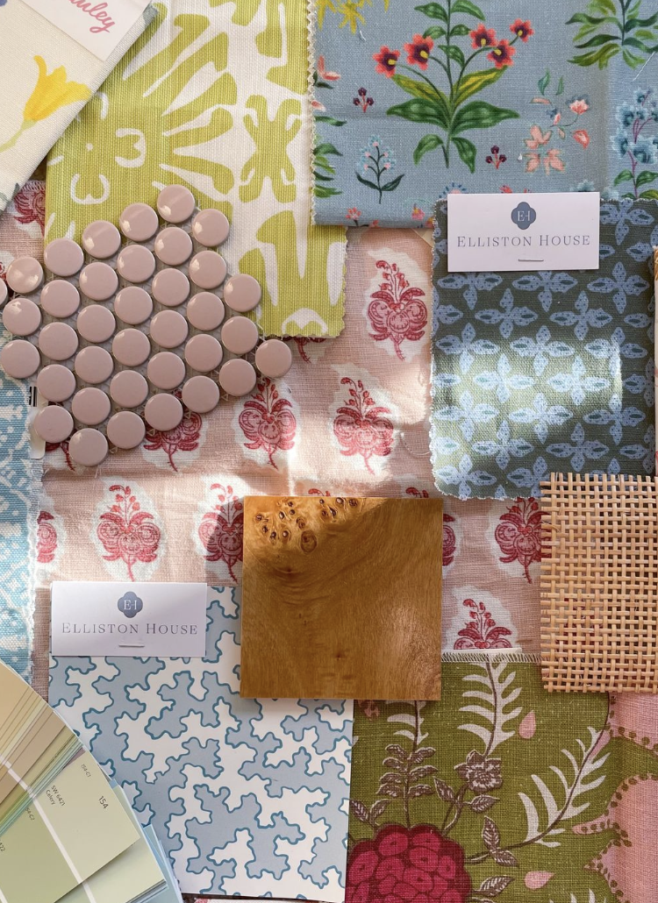

My Nashville Map
This interactive map highlights 10 of my favorite places in Nashville, Tennessee. Click on any marker to see the location name, a photo, and why it's meaningful to me. You can zoom in and out and pan around the map.
Design Inspiration

About This Project
Basemap Design
The design for my basemap was inspired by colorful interior design palettes and floral arrangements. I liked how the inspiration images use soft pastel colors like pink, green, blue, and cream while still feeling bright and playful. The patterns and textures in the fabric swatches especially stood out to me because they combine multiple colors without looking overwhelming. I wanted my map to have a similar feeling of light, colorful, and visually interesting without being distracting. To translate this into my map design, I used pastel tones for different features. The roads appear in light pink and the green spaces are soft green so they match the overall palette from my inspiration images. I also kept the background fairly light so the colors stand out but still feel calm. The goal was to make the map feel a little more creative and personal instead of looking like a standard default map.
Design Challenges
One of the biggest challenges when designing the basemap was thinking about how it would look at different zoom levels. When the map is zoomed out, there is a lot of information visible, so I had to make sure the colors and features didn't make the map feel too busy. I focused on keeping major roads and parks visible while smaller details became clearer only when zooming in. Another challenge was deciding what information should stand out the most. Since this map highlights my favorite places in Nashville, I wanted the markers to be easy to see. That meant keeping the basemap colors softer so the markers would draw attention without blending into the background.
Technical Challenges
The technical part that was most challenging was connecting everything together with Python and Mapbox. I had to geocode my locations, add them as markers, and create pop-ups that include images and descriptions. At first, I had some issues with formatting and getting the map to display correctly. I used AI tools to help troubleshoot some of the code and explain what certain sections were doing. This helped me understand how the Mapbox token, geocoding requests, and marker layers worked together. After adjusting a few things in the code, everything started working properly and I was able to create the interactive map successfully. Overall, this project helped me understand how design choices, data, and coding all work together to create an interactive map.